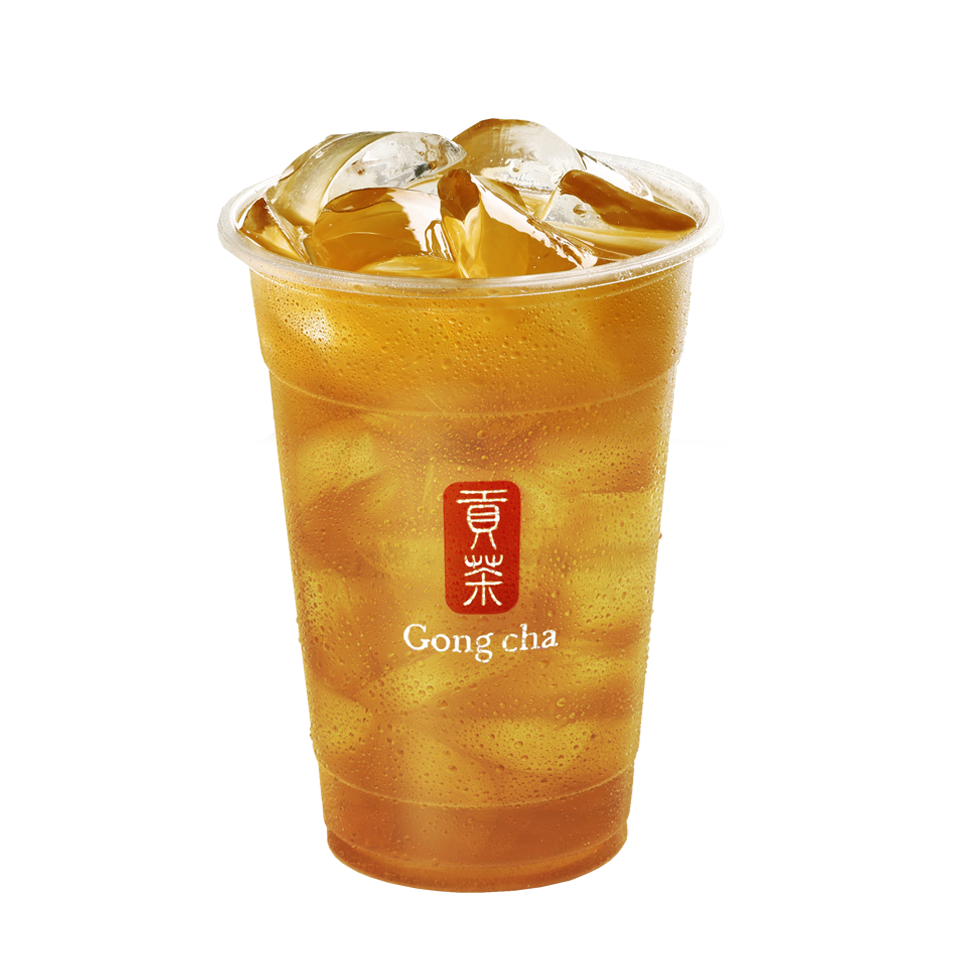
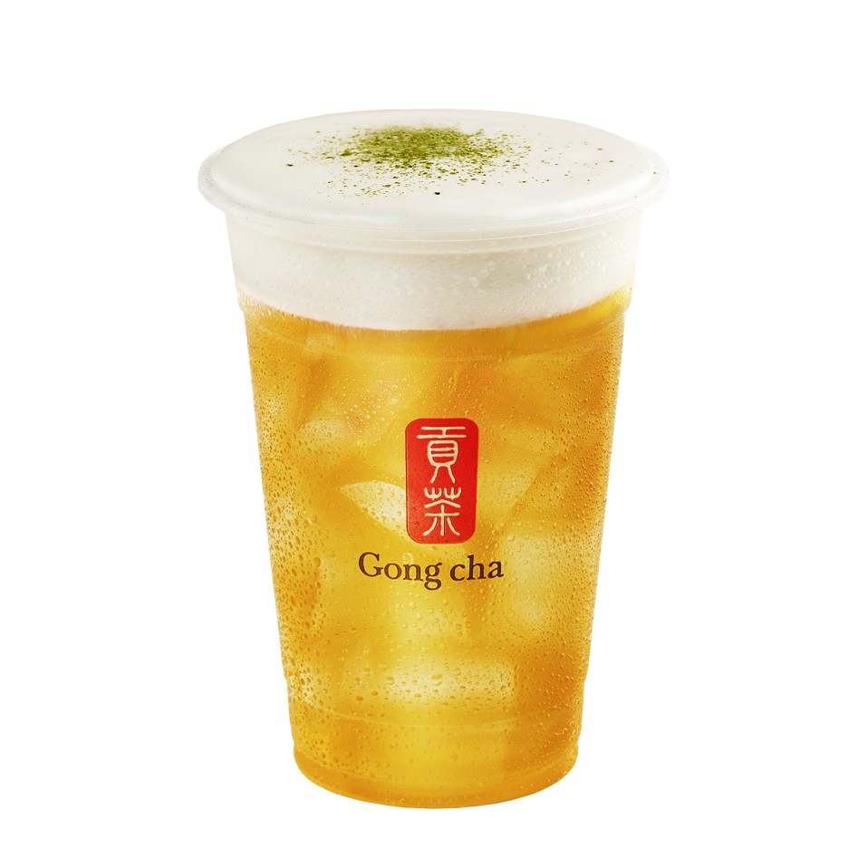
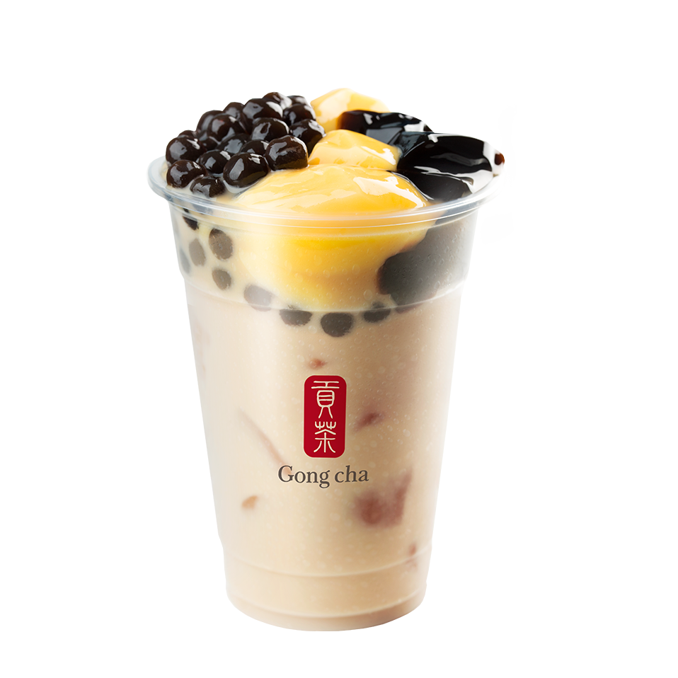

01

Tĩnh · Sâu · Thanh
CHƯƠNG 01 · SỰ TINH KHIẾT
Oolong nguyên chất.
Câu chuyện của sự kiên nhẫn.
Không cần lớp kem hay topping để tạo ấn tượng. Oolong kể câu chuyện bằng chính hương trà: mở đầu thanh nhẹ, dần sâu hơn và để lại hậu vị sạch, dài.
“Sự cao cấp đôi khi là biết giữ lại những gì thật sự cần thiết.”
- Nền trà
- Oolong thơm sâu
- Trải nghiệm
- Tĩnh tại, tập trung
- Dành cho
- Người yêu vị trà nguyên bản
Khám phá Oolong
02

Thanh · Mịn · Cân bằng
CHƯƠNG 02 · NGHỆ THUẬT CÂN BẰNG
Alisan Milk Foam.
Hai tầng vị, một khoảnh khắc.
Lớp kem sữa mềm, mặn ngọt gặp nền trà Alisan thanh nhẹ. Hai cá tính tưởng như đối lập được giữ vừa đủ để không bên nào lấn át bên nào.
“Một ly trà tinh tế không chọn giữa đậm và dịu. Nó tìm ra điểm cân bằng.”
- Nền trà
- Alisan thanh hương
- Điểm nhấn
- Milk Foam mặn ngọt
- Dành cho
- Người yêu sự tinh tế
Khám phá Alisan
03

Đậm · Vui · Đa tầng
CHƯƠNG 03 · NGHI THỨC HIỆN ĐẠI
Trà sữa Oolong 3J.
Truyền thống biết cách vui.
Oolong đậm vị trở thành nền cho ba kết cấu topping. Mỗi ngụm vừa giữ được bản sắc trà, vừa mang đến cảm giác khám phá mới mẻ của một nghi thức thưởng trà hiện đại.
“Cao cấp không có nghĩa là nghiêm nghị. Một ly trà tốt cũng có thể đầy niềm vui.”
- Nền trà
- Oolong đậm vị
- Điểm nhấn
- Ba kết cấu topping
- Dành cho
- Người thích khám phá
Khám phá Oolong 3J